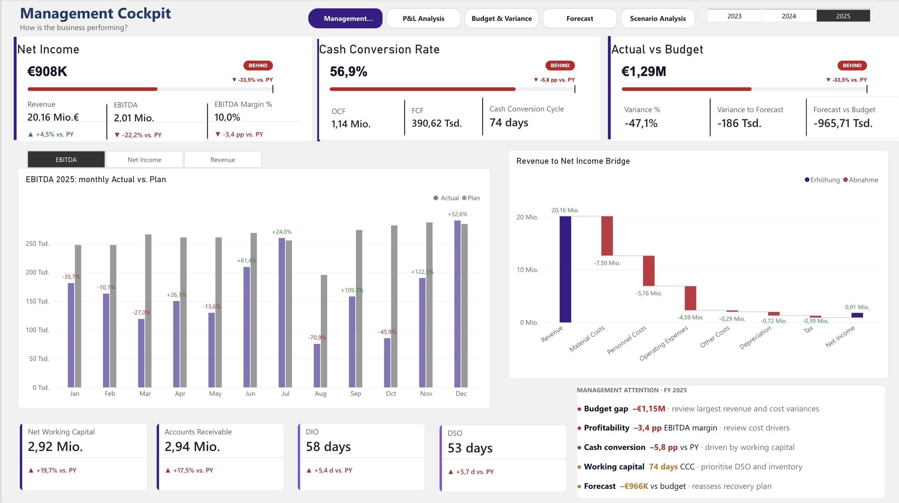
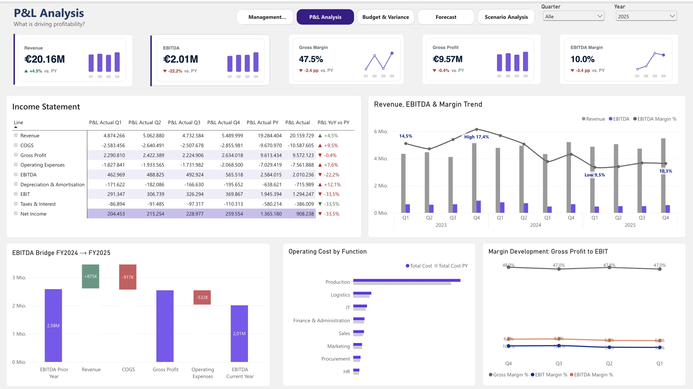
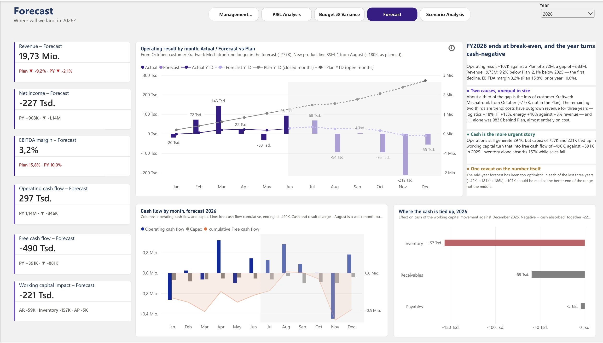
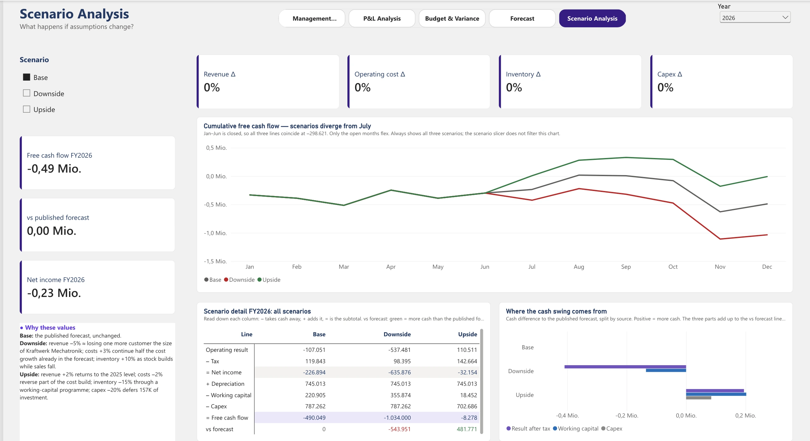
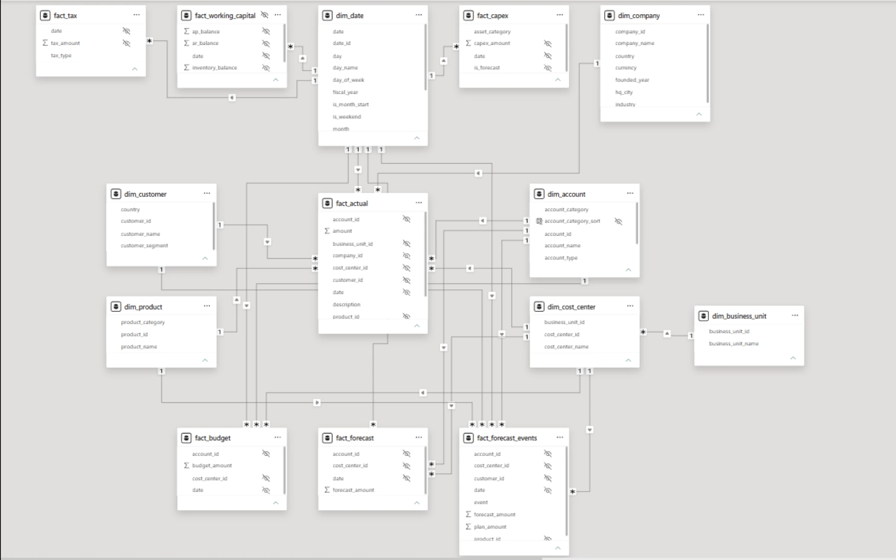

01 MANAGEMENT COCKPIT
How is the business performing?

02 — Finance reporting / Power BI
A five-page Power BI controlling report for AlpenTech GmbH, a fictional German industrial B2B manufacturer. It turns plan, actuals and forecast into KPIs, variance views and a scenario analysis a controller can present to management. Fiscal years 2023–2025 are complete; 2026 is the open year, with actuals through June and forecast through December.
Business question
How is the business performing against plan, and what will management have to decide next?
Approach
Star schema → DAX measures → KPI targets → five question-led report pages
Output
A Power BI report with 34+ documented measures, built as an importable .pbix and as a PBIP with TMDL.
Power BI report
Every page starts with a business question and is built to answer it: the cockpit for the overview, then variance, forecast and scenarios in the order a controller would investigate them.
01 MANAGEMENT COCKPIT

02 P&L ANALYSIS

03 BUDGET & VARIANCE
04 FORECAST 2026

05 SCENARIO ANALYSIS

Screenshots of the Power BI report; the .pbix file is in the repository. Click a view to open it full size.
Key findings — FY 2025
Revenue of €20.16m was exactly on plan (+4.5% YoY), yet EBITDA landed €1.12m below plan and 22.2% below the prior year. The gap is cost-driven.
+€490k over plan, 43% of the unfavourable cost variance. Gross margin eroded from 50.9% (2023) to 49.9% and 47.5%; gross profit fell in absolute terms in 2025.
€2.0m of EBITDA became only €391k of free cash flow. Net working capital grew 19.7% against 4.5% revenue growth, and customers now pay ten days later than in 2023.
Mid-year forecast: an operating result of −€107k against a plan of +€2.72m, the first loss in the dataset. A third comes from losing the largest customer (25.6% of revenue), two thirds from the cost trend in logistics, IT and energy. Past mid-year forecasts were too optimistic, so this is the better end of the range.
KPI logic + DAX
Energy costs 30.6% over plan would show +30.6% if divided by a negative base. ABS() means an overrun never looks like an improvement.
DIVIDE ( [Variance], ABS ( [Budget] ) )Jan–Jun of the forecast equal actuals by construction, so accuracy is measured on Jul–Dec only. For 2024 the error moves from −8.5% to −18.9%.
KEEPFILTERSExcluding depreciation. The only of three tested definitions where gross profit minus opex lands exactly on EBITDA.
GP − Opex = EBITDAA decoupled PnL_Layout table with a SWITCH measure drives rows and subtotals.
PnL_Layout + SWITCHMargins and cost ratios use REMOVEFILTERS so a filter on one account cannot distort them.
REMOVEFILTERS ( dim_account )Base, Downside and Upside change only the open months and rest on data-anchored assumptions.
Base · Downside · UpsideData + modeling
A star schema for one company at monthly and transaction level. Revenue is positive and costs negative, so SUM(amount) yields the operating result directly.

Reflection
The most useful work was deciding what “good” means for each KPI: a derived target for net income, 75% instead of 100% for cash conversion, and a tolerance band for variance. A red-by-design KPI teaches readers to ignore it.
The repository holds a decision log with the reason for each non-obvious choice, including the ones I later reversed, such as the gross-profit definition. A number that can be explained is a number that can be trusted.
The data is synthetic and clean (fixed seed, reproducible, validated by script), and every variance is a deliberate business scenario. Working capital, capex and tax are derived from the P&L with assumed payment terms: the trends are real, the absolute levels are illustrative.
AlpenTech GmbH is fictional and the data is synthetic.